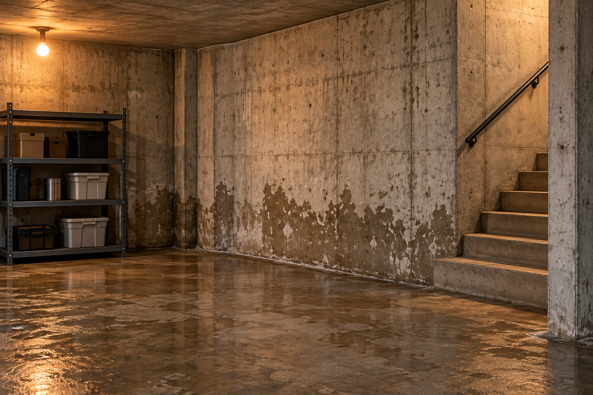
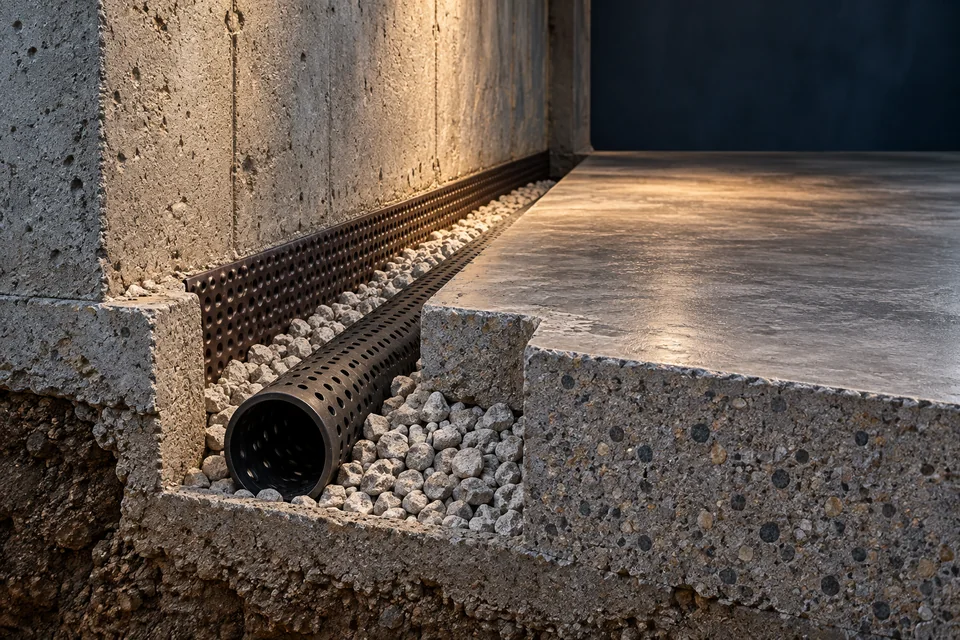

Plan the route
Discuss which walls are affected, where the collected water will go and how the work relates to any existing sump basin.
Water management from within
Explore ways to manage water from inside the basement.
Discuss your projectIndependent providers. Availability varies by location.

Interior approaches may include drainage components or other measures inside a basement, depending on the property and the source of the water. An independent provider can explain what they would assess and why a particular scope may be relevant.
A visible damp patch does not identify the cause on its own. Describe the location and timing of moisture before assuming that an interior system is the right option.
A closer look
When moisture keeps returning at the floor edge, the conversation is about where that water can go. Interior drainage creates a collection route beneath or alongside the basement perimeter.

A drainage channel can intercept water at the wall-to-floor junction and direct it toward a collection point.
The drain, basin and discharge arrangement need to work together. An isolated channel without a suitable outlet is only part of a system.
Surface condensation, plumbing leaks and outside drainage call for different responses. The assessment should identify what is feeding the problem.
The project conversation
Ask a provider to walk you through the proposed work area, the drainage route and how the room will be left afterward.
Discuss which walls are affected, where the collected water will go and how the work relates to any existing sump basin.
An interior perimeter installation may involve opening the slab edge, placing drainage components and connecting the collection system.
Clarify who reinstates the concrete and finishes, which parts remain accessible, and what testing and maintenance guidance are included.
Rotate the cutaway and follow the installation sequence. The model makes the hidden relationship between the floor, aggregate and drain easier to understand.

A perforated drain sits within the perimeter channel.
A more useful first conversation
Describe the room, wall, corner or area that is affected.
For this service, note whether moisture follows the wall-to-floor joint or also appears in the middle of the floor.
Mention whether you notice it after rain, occasionally or on a recurring basis.
A brief record of rainfall and where the first wet area appears can help explain the pattern.
Tell us about visible changes or an existing system relevant to your request.
Mention finished walls, stored belongings, previous drainage work and any existing sump basin.
Describe the room, the affected wall or floor edge, and when the moisture appears. You can select “Not sure yet” if you do not know which service is relevant.
No single approach fits every situation. The appropriate next step depends on the cause, construction and condition of the property.
No. Any assessment, scope and estimate come from an independent provider. The website does not guarantee pricing or availability.
The work area depends on the proposed design. Ask the provider to identify the exact floor sections involved, how they will protect the room and what restoration is included in the estimate.
Interior drainage manages water through a collection route inside the basement. Exterior work addresses the outside foundation surface and surrounding drainage. A property assessment helps determine whether either approach, or a combination, is relevant.
Ask which parts can be inspected or cleaned, how to recognize a change in performance and who services connected equipment. Keep the provider’s handover information with the system details.
The wider picture
Interior drainage is often discussed alongside collection equipment and the condition of the foundation.
Share what you have noticed and our team will review your request.
Submitting a request does not confirm an appointment, estimate or provider availability.